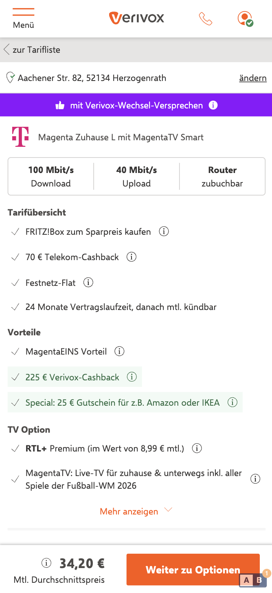
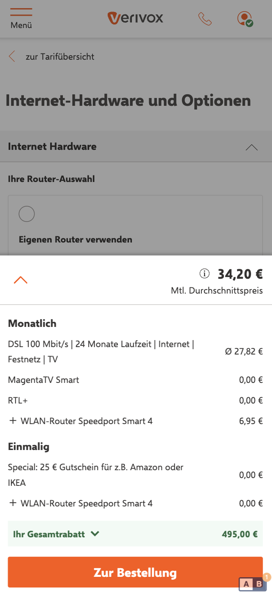
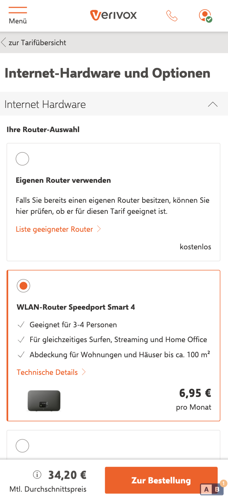
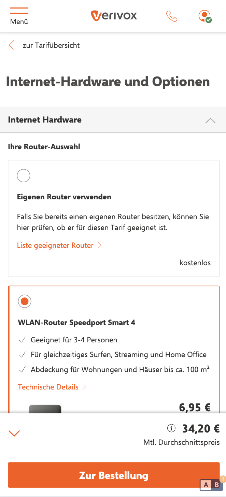

Verivox: Offer Page Basket
Clarity and information hierarchy drive confidence. The basket that made the difference.
The Opportunity
User feedback described the Offer Page as unstructured and sparse, with critical info missing. Customers arrived at the second step, the Options page, lacking clarity on all base information about the tariff, the monthly prices and what comes next, creating decision anxiety.
The Hypothesis
If we keep key tariff information and the primary CTA persistently visible across the step, users experience less decision friction and progress to checkout at a higher rate.
Scope & Ownership
- Owned Offer + Options funnel optimization end-to-end
- Drove discovery, prioritization, experiment design, and rollout decisions
- Led cross-functional delivery with engineering, UX, research, QA, and BI
Stakeholder Complexity
We aligned Product, UX, BI, and commercial teams on a shared KPI framework while balancing speed-to-ship against measurement quality. The key challenge was prioritizing mobile and desktop changes without fragmenting the roadmap.
Decision Memo
We prioritized a persistent basket over broader redesign alternatives because it directly targeted decision friction and could be tested quickly with clear guardrails. We deprioritized lower-confidence visual refinements until core conversion gains were validated.
Strategic Framing
Market Context
The broadband category has high consideration, strong price sensitivity, and low trust in hidden trade-offs. In this environment, reducing ambiguity at decision points is a direct growth lever, not only a UX improvement.
KPI Tree
- North-star: Conversion Rate (Sign-up)
- Leading: CTA visibility, basket interactions, click-through
- Guardrails: bounce rate, support contacts, mobile performance
Trade-offs Managed
- Information density vs. cognitive load
- Persistent guidance vs. visual noise
- Desktop flexibility vs. mobile speed and clarity
Iteration Loop
We ran a tight cycle: identify friction in behavior and research data, ship scoped variants, validate via A/B testing, and fold learnings into the next iteration. This avoided one-shot redesign risk and compounded gains over multiple releases.
Who We Designed For
🧑💻 Meticulous Max
Max is savvy, fast-switching, and well-informed, but he still double-checks. He doesn't want to overpay, but hates the risk of unreliable internet. He’s a hybrid of control and curiosity.
🧐 Clockwork Christian
Christian is structured, straightforward, and efficiency-driven. He’s not looking for flash, just clarity, speed, and simplicity. If a product respects his time, he’ll respect it back.
Experiments & Outcomes
- Experiment 1 (Offer and Options Page - Mobile and Desktop): Baseline 10,96% CR, improvement +7,03%, statistical significance >99%.
- Experiment 2 (Desktop Iteration): Baseline 14,95% CR, improvement +3,02%, statistical significance 90%.
- Total business impact: €2.2M net revenue (FY).
Experiment 1: Initial Basket (Mobile + Desktop)
Offer Page


Options Page


🧪 Experiment 1 Result: Baseline 10,96% CR, uplift +7,03%, significance >99%.
Experiment 2: Desktop Iteration
Iteration Basket Desktop
🧪 Experiment 2 Result (Desktop Iteration): Baseline 14,95% CR, uplift +3,02%, significance 90%.